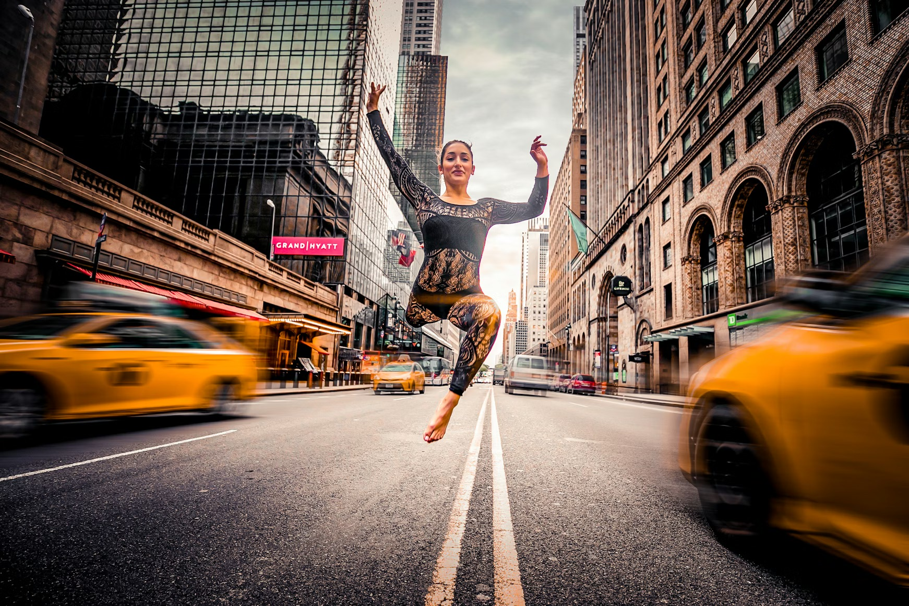

Gallery: Identity & Belonging
Grand Central Station, East 41st Street
Photographer: Todd Kent
Instagram: @churchoftodd
This photograph captures stillness in motion, a moment that refuses to rush. She rises against the noise, in a city that never stops.